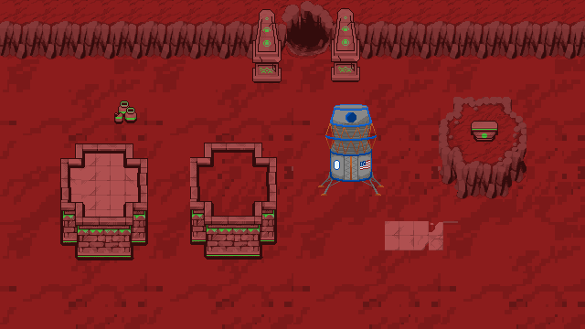

Indie Game Development.
This game is Untitled for the time being. This is a top down RPG taking place on mars.
Base Mars tileset is complete. Character standing and walking sprite sheet complete. Character will be customizeable hair and other features will come later
Overview: Top down RPG Cozy game where the player is the captain of their crew on a mission to colonize Mars. However upon arrival they are met with Martians.
The Martians are in ancient times and have not discovered technology yet. The use swords, spears, bows, and hold the power of magic.
These Martians are friendly by nature. Interacting with NPCs is important to the game. Grace, a scientist on your crew, is focused on building relations and helping the Martians advance with the goal of being apart of a civilization that co exists with them.
Gunter on the other hand, and ex marine from your crew wants to kill them all and take the planet for our own. What story plays put it determined by the players actions.
These links will be replaced with socials in the future